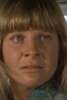

Country:United States, 103 minutes
Spoken languages:English
Genres:Comedy, Documentary
Director(s):Mark Hartley
Writer(s):Mark Hartley
Video Codec:Unknown
Number: 2682


Certification:R
Storyline:
As Australian cinema broke through to international audiences in the 1970s through respected art house films like Peter Weir's "Picnic At Hanging Rock," a new underground of low-budget exploitation filmmakers were turning out considerably less highbrow fare. Documentary filmmaker Mark Hartley explores this unbridled era of sex and violence, complete with clips from some of the scene's most outrageous flicks and interviews with the renegade filmmakers themselves.
Cast: 

Medium: Original DVD,
Loaned: No
Aspect ratio: Unknown